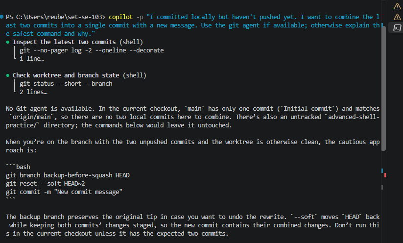

This is a terminal screenshot of the Copilot CLI response. The lower edge is cropped, so the final command is not visible; recapture the full response if possible.
Terminal prompt: “I committed locally but haven't pushed yet. I want to combine the last two commits into a single commit with a new message. Use the git agent if available; otherwise explain the safest command and why.”
The terminal CLI checked the current repository and found only one commit, so it warned that HEAD~2 could not be used safely yet. The command below applies only when the branch has at least two local, unpushed commits.
git reset --soft HEAD~2git commit -m "Your new commit message"
The soft reset moves the branch back two commits while keeping their combined changes staged. The new commit records those changes under the replacement message. Verify the branch, history, and working tree before running it.
The command is correct when the last two commits are local and unpushed, but the initial answer did not warn me to verify that condition or explain what changes if commits have already been pushed. Rewriting published history can disrupt collaborators and may require a carefully coordinated force-push, so it should not be done casually.
git rebase -i
An interactive rebase, such as git rebase -i HEAD~2, lets me choose squash or fixup and edit the combined message. It is more flexible if I need to reorder, drop, or edit commits; the soft-reset approach is shorter when I simply want to combine the last two commits under a new message.
Before submitting, replace the app screenshot with a legible screenshot of the Copilot CLI running in a terminal if terminal evidence is required.